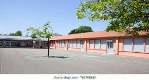
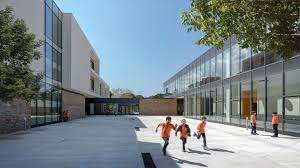

| Facilities | Details |
| Ground |  |
| Environment | |
| Campus |  |
Children today spend less than half the time playing outdoors that their parents did and are less likely to spend time outdoors at school. They are growing up in an increasingly indoor, sedentary and virtual world, ever more divorced from the real world around them. This has a significant impact on their physical health, emotional wellbeing, social competence and their connection with the natural world and their local communities.